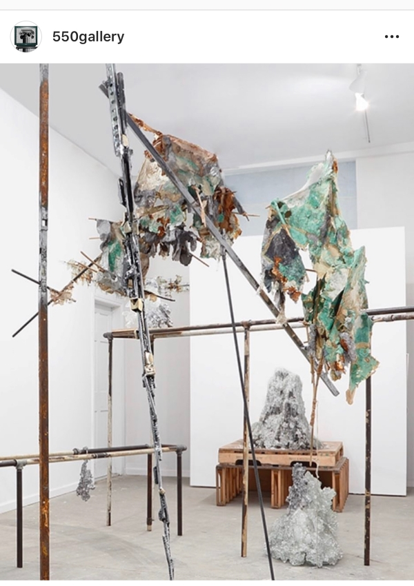
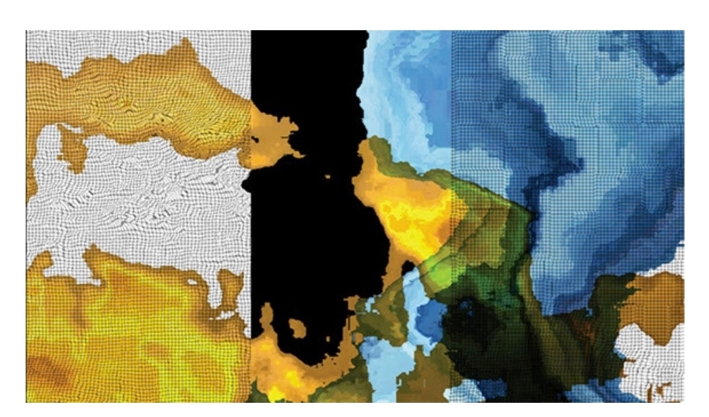

Long Island City is making a strong push as one of the most happening areas for art activity in NYC. 550 Gallery has an amazing showing with Andrew Erdos and Yasue Maetake. It is curated by Greg Barton. Yet another great show from rising gallerist Elliott De Cesare.

Happening simultaneously in the neighborhood will be an opening at Radiator Gallery. It is curated by Viola Lukacs
It will be showing till April 19th.

Both shows are sure to be worth the trek to LIC regardless of where you will be coming from!
-----------------------------------------------------------------
----------------------------------------------------------------- Home